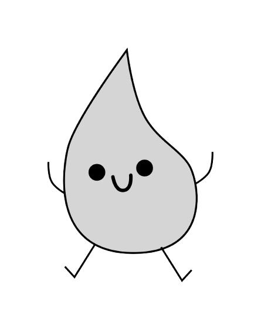

Current Projects
Past Projects
Umi - task management and music all in one to help student increase focus and productivity!
- Collaborated on the development of a task management web application for students.
- Utilized a Work Breakdown Structure (WBS) to allocate tasks among team members, ensuring clarity and efficient progress.
- Developed a project schedule with milestones, deadlines, and deliverables to guide the team's workflow.
- Regularly monitored progress to align with the project timeline and Kanban board, ensuring on-time delivery.
- Developed core functionality for task management using the Notion API, enabling users to add, edit, and delete tasks directly from the platform.
- Designed and implemented seamless navigation and flow across all pages, including the home and FAQ pages.
- Implemented CI/CD pipeline for smooth automatic testing and deployment.
- Assisted team members in debugging and resolving issues to ensure smooth project progress and functionality.
